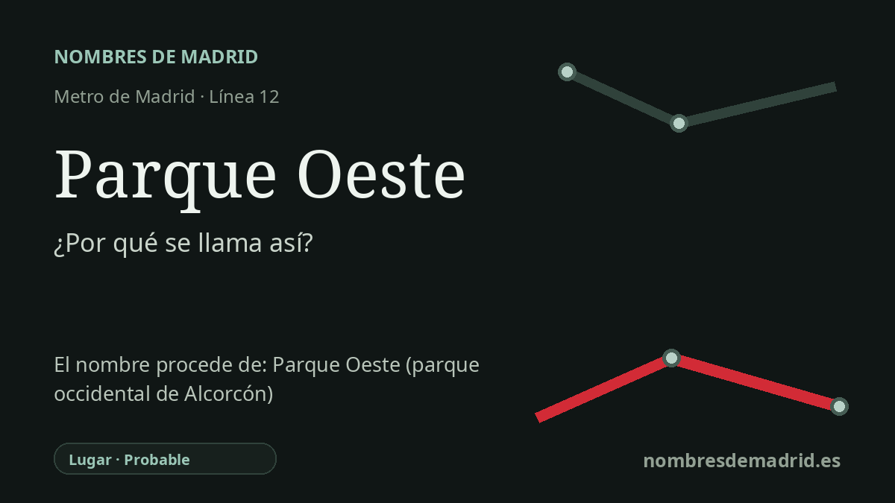

Publicado el · Investigación de Nombres de Madrid · Cómo verificamos cada origen · 8 fuentes consultadas
Respuesta rápida
La estación Parque Oeste toma su nombre del área Parque Oeste de Alcorcón, un desarrollo urbano de finales del siglo XX situado en el lado occidental del municipio. El nombre ya aparecía en documentación urbanística oficial antes de la apertura de MetroSur en 2003.
La historia del nombre
El nombre **Parque Oeste** procede del lugar homónimo de Alcorcón, no de una persona ni de un acontecimiento histórico. La estación pertenece a la línea 12, MetroSur, y da servicio al sector occidental de Alcorcón en torno a la calle Estambul, la avenida de Europa, el área comercial y el campus de Alcorcón de la Universidad Rey Juan Carlos.
El topónimo es anterior a la estación de Metro. Un anuncio publicado en 1998 en el Boletín Oficial del Estado explica que el Área de Centralidad de Alcorcón, creada mediante el planeamiento urbanístico tras el proceso de revisión de 1989, era ya conocida como **Parque Oeste de Alcorcón**. Por tanto, el nombre de la estación toma un topónimo urbano existente, en vez de ser una denominación creada expresamente para el ferrocarril.
Parque Oeste fue una de las grandes actuaciones metropolitanas de finales del siglo XX en el borde sur y oeste de Madrid. Las fuentes urbanísticas describen un ámbito de unas 200 hectáreas con usos comerciales, residenciales, universitarios, hospitalarios y de parque urbano. El proyecto cambió con el tiempo: las ideas iniciales de parque empresarial y campo de golf dieron paso a un distrito más mixto, con vivienda cerca de las estaciones ferroviarias y el campus de la Universidad Rey Juan Carlos.
La dimensión comercial del nombre se hizo especialmente visible en los años noventa. La prensa de 1996 describía Parque Oeste-Alcorcón como una de las mayores concentraciones de grandes superficies de la Comunidad de Madrid, situada entre la carretera de Extremadura y el futuro corredor M-50/M-506. Información inmobiliaria posterior presenta el conjunto comercial como desarrollado por fases en 1994 y 1996, con más de 125.000 metros cuadrados de superficie bruta alquilable.
El nombre puede traducirse literalmente como 'parque del oeste' y encaja con la posición de la zona en el lado occidental de Alcorcón, cerca de Móstoles. Aun así, la explicación más segura es que la estación de Metro tomó el nombre del área urbana ya consolidada llamada Parque Oeste. No se ha encontrado el acto oficial exacto que asignó la denominación de la estación, pero la documentación urbanística, de transporte y de contexto local apunta de forma coherente a ese origen toponímico.